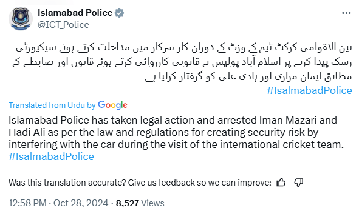
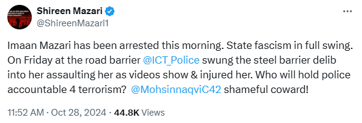

Human rights lawyer Imaan Zainab Mazari-Hazir and her husband Hadi Ali were arrested on Monday, the Islamabad police said. “Taking legal action, Islamabad police have arrested Imaan Mazari and Hadi Ali as per the law and regulations for creating a security risk by interfering in state duties during an international cricket team’s visit,” the police said on X.
Imaan’s mother, former human rights minister Shireen Mazari, said that her daughter was arrested in the morning today. “Imaan Mazari has been arrested this morning. State fascism in full swing,” Shireen said in a post on X. She claimed that the Islamabad police on Friday had “swung a steel barrier deliberately into her, assaulting her”, referring to a purported video being shared on X. The former human rights minister alleged that the police action had “injured” her daughter.
A video being shared on social media purportedly shows Imaan and her husband moving road barriers to clear the path for traffic. Traffic constables and a man in a jacket can be seen moving the barriers back to their original positions to close the road as the lawyers make multiple attempts to remove them. At one point, the man in the jacket can be seen pushing the barrier towards Imaan who was standing on its other side, causing Ali to react by pushing back the man.